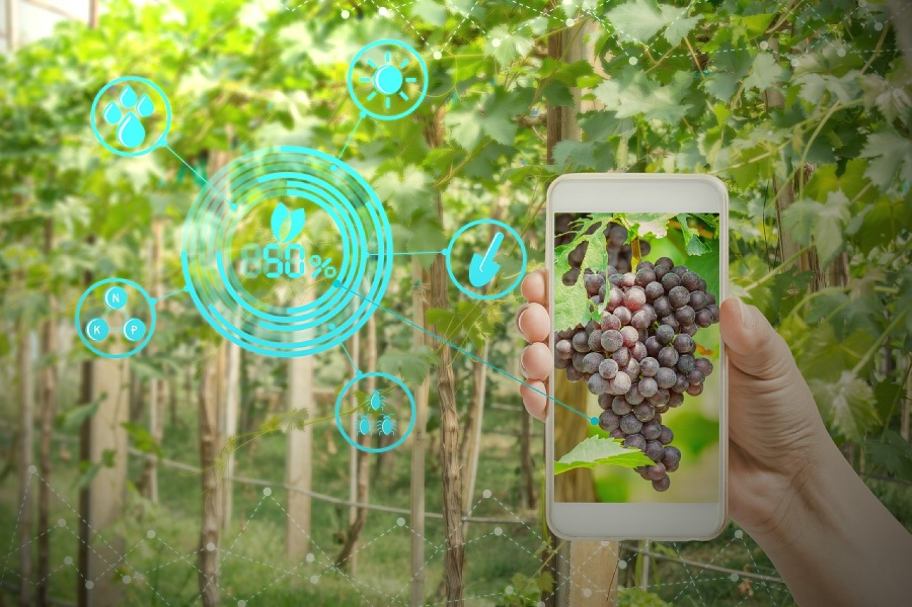
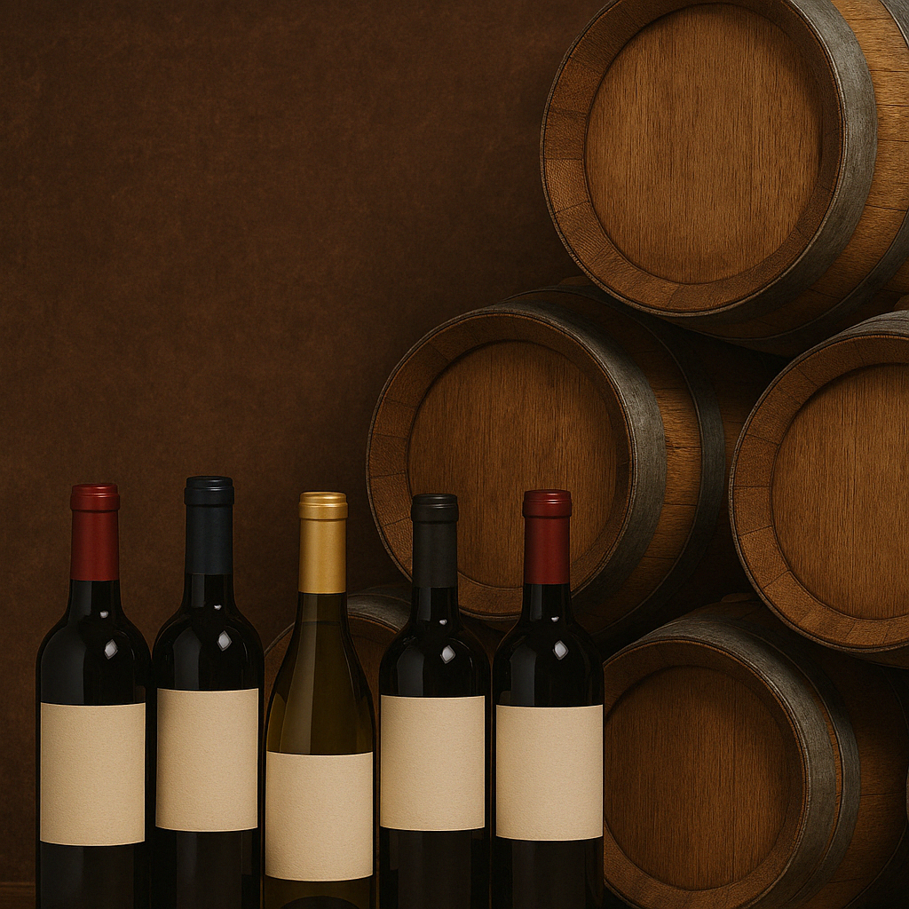

A Vinheria Agnello nasceu há mais de 15 anos, no coração de São Paulo, movida pela paixão de Giulio Agnello pelos vinhos e pelas boas histórias que nascem ao redor de uma taça. Com um espírito familiar e acolhedor, a vinheria começou com uma única loja física, mas logo se destacou no cenário paulistano pela curadoria cuidadosa de rótulos e, principalmente, pelo atendimento personalizado que conquistou uma clientela fiel e apaixonada. Desde o início, a missão da Vinheria Agnello sempre foi mais do que apenas vender vinhos. Nosso propósito é guiar cada cliente em uma jornada sensorial e cultural pelo mundo do vinho — explicando a origem de cada uva, a história por trás de cada vinícola, e sugerindo harmonizações que transformam refeições em experiências memoráveis. Durante anos resistimos à digitalização, acreditando que o calor humano e a atenção aos detalhes não podiam ser replicados virtualmente. No entanto, os desafios impostos pela pandemia e a visão inovadora de Bianca, filha de Giulio, nos fizeram repensar. Agora, damos um passo importante: levar a essência da Vinheria Agnello para o mundo online, sem perder nossa alma.
Embora nossa especialidade seja oferecer uma curadoria de vinhos de vinícolas renomadas — nacionais e internacionais — também temos orgulho da nossa pequena, mas dedicada, produção de uvas no interior de São Paulo, onde cultivamos variedades selecionadas de Cabernet Sauvignon, Syrah e Chardonnay. Nosso vinhedo é cuidado com rigor e carinho, respeitando os ciclos da natureza e aplicando práticas sustentáveis. A cada safra, buscamos extrair o melhor de cada terroir, testando novas técnicas e mantendo viva a tradição que nos inspira. Nosso objetivo é garantir que cada garrafa represente autenticidade, equilíbrio e excelência — valores que carregamos desde o primeiro dia.
